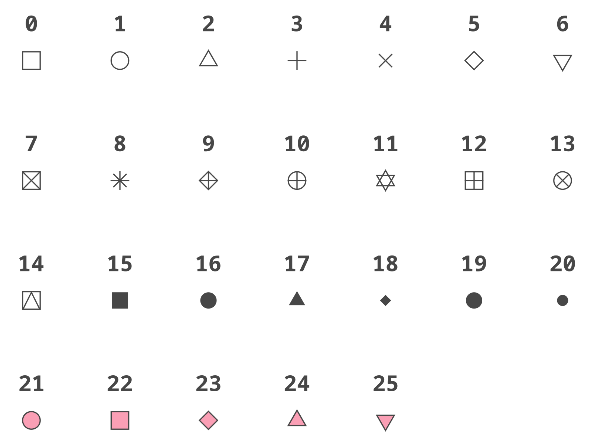
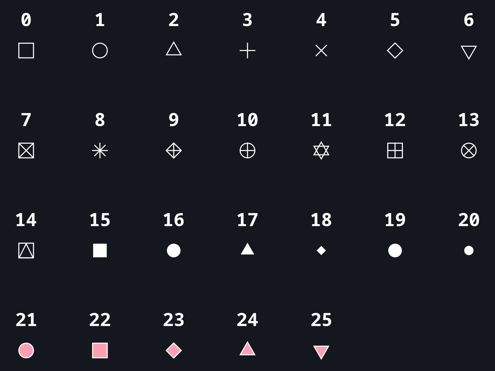
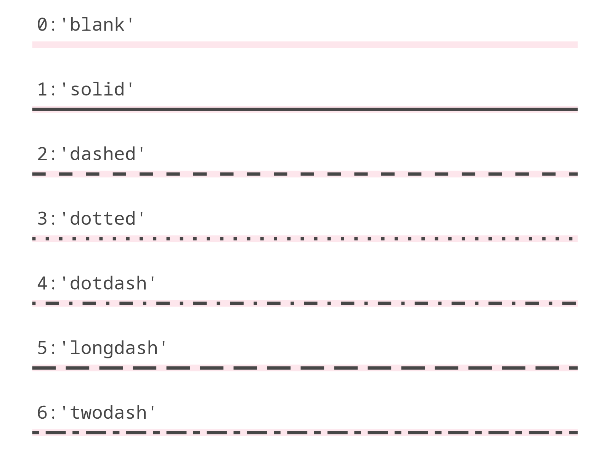
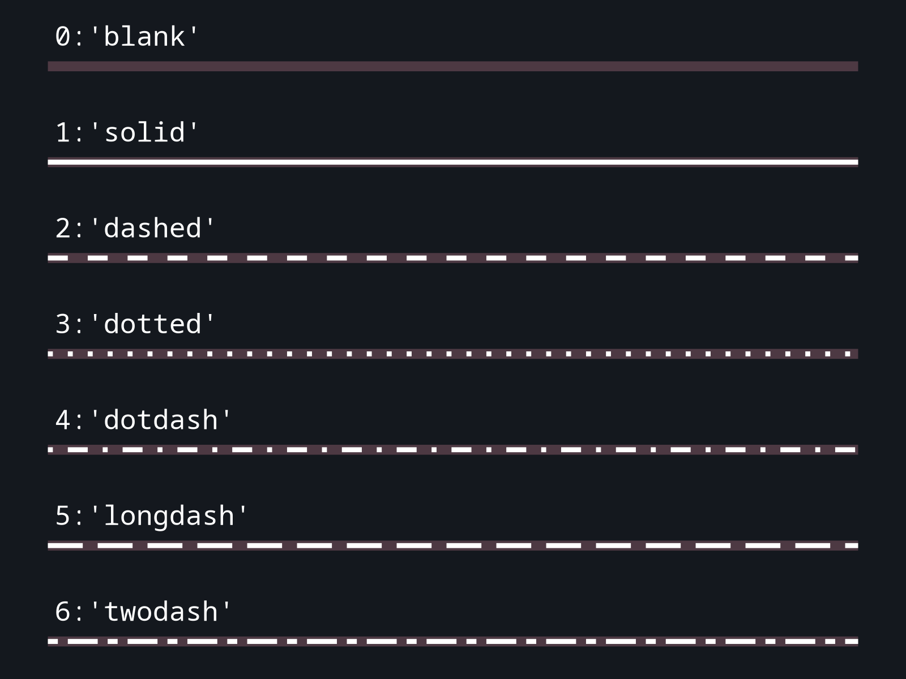
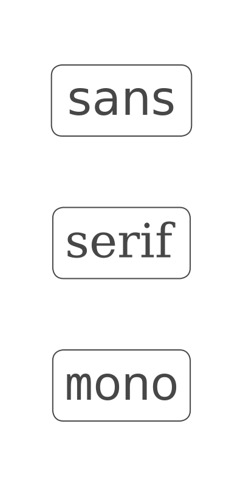
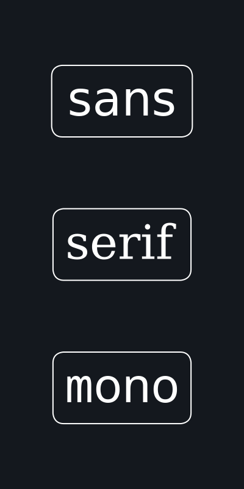
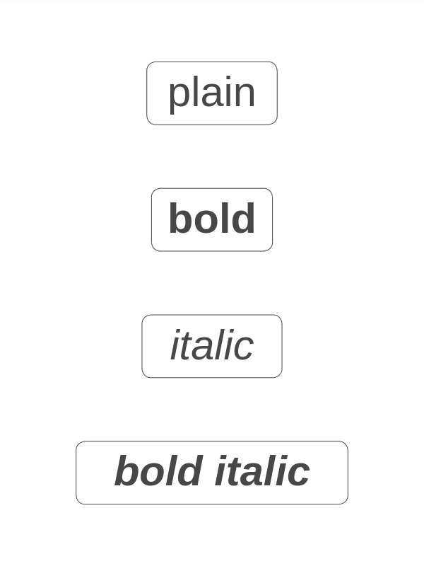
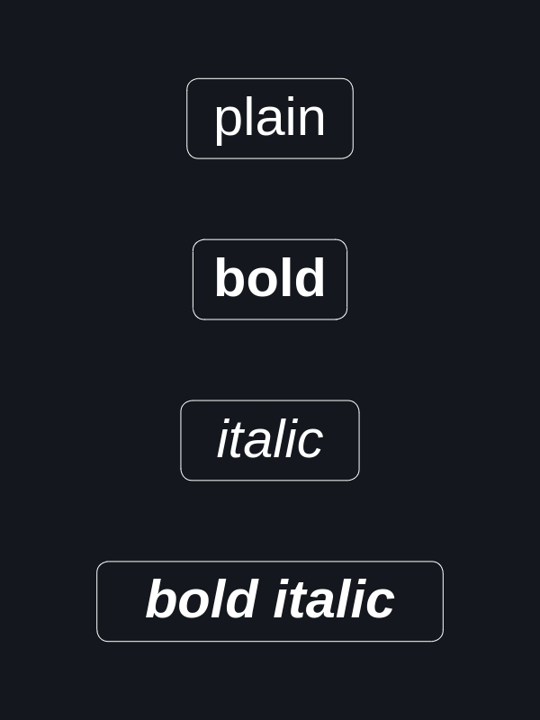

Aesthetics#
Color and Fill#
Colors and fills of geometries can be specified in the following ways:
RGB/RGBA (e.g.
"rgb(0, 0, 255)","rgba(0, 0, 255, 0.5)").HEX (e.g.
"#0000ff","#00f").Blank string (
"") or aliases:"blank","transparent"for a fully transparent color.A name, one of:
{kind=link}
{kind=link}
A system color name, one of:
Point Shapes#
 {kind=link}
{kind=link}
Line Types#
Predefined Patterns#
 {kind=link}
{kind=link}
Custom Patterns#
Ways to specify the linetype:
list, defining the pattern of dashes and gaps used to draw the line:
[dash, gap, ...];list with specified offset:
[offset, [dash, gap, ...]];string of an even number (up to eight) of hexadecimal digits which give the lengths in consecutive positions in the string.
{kind=link}
{kind=link}
Text#
Font Family#
Universal font names:
 {kind=link}
{kind=link}
The default font family is 'sans'.
You can also use the name of any other font installed on your system (e.g. "Times New Roman").
Font Face#
 {kind=link}
{kind=link}
The default font face is 'plain'.